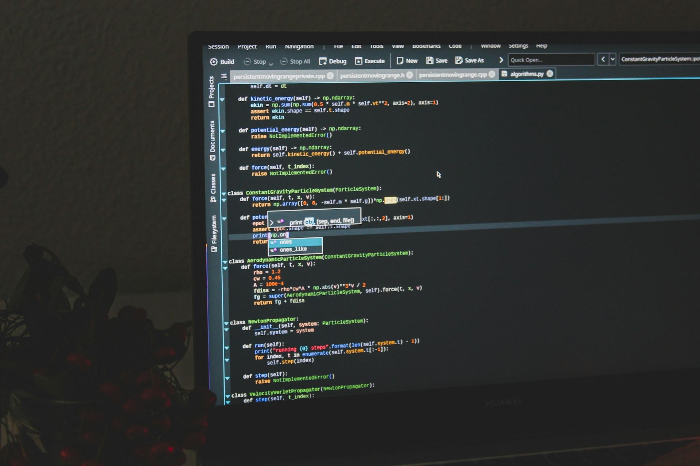

My Journey in Web Development
September 21, 2025 by Kelandra Pringle

When I first started studying Computer Studies, web development felt like a completely new world filled with endless possibilities. At first, the tags, attributes, and code structures looked confusing, but as I practiced, they began to make sense. I remember building my first simple webpage and feeling proud that I could create something visible and interactive on my own.
Over time, I have learned not just HTML and CSS, but also how important it is to think about user experience, design, and accessibility. Each project I take on challenges me to push my creativity while sharpening my technical skills. This journey is not only helping me grow as a developer, but also teaching me patience, problem-solving, and resilience.
Tips for Upcoming Students
September 21, 2025 by Kelandra Pringle
As a final-year student, one of the most important lessons I have learned is the value of consistency. Don’t wait until the last moment to start projects or study for exams. Breaking work into smaller, manageable parts makes the journey far less stressful and much more rewarding. It also helps you truly understand the material rather than memorizing it.
I also encourage students to balance academics with rest, hobbies, and community. Take care of your health and surround yourself with positive influences. Don’t be afraid to ask questions, whether in class or from peers, because curiosity is the first step toward mastery. Most importantly, believe in your potential—you are capable of much more than you think.